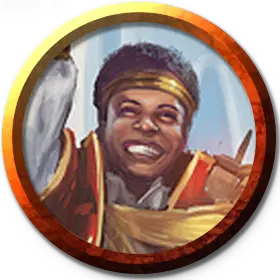

Профессор хаоса Лорхолда
Lorehold Professor of Chaos
Маленький или Средний Гуманоид (Волшебник), любое мировоззрение

Класс Доспеха 12 (15 с доспехом мага)
Хиты 108 (17к8 + 32)
Скорость 30 футов
| мод | спас | ||
|---|---|---|---|
| СИЛ | 11 | +0 | +0 |
| ЛОВ | 14 | +2 | +2 |
| ТЕЛ | 14 | +2 | +5 |
| мод | спас | ||
|---|---|---|---|
| ИНТ | 19 | +4 | +7 |
| МДР | 15 | +2 | +5 |
| ХАР | 13 | +1 | +4 |
Навыки Восприятие +7, История +7, Магия +7
Чувства пассивное Восприятие 15
Языки Общий, и ещё четыре любых языка
Опасность 7 (2900 опыта)
Бонус мастерства +3
Особенности
Голос из прошлого (1/день). Профессор может наложить заклинание связь с иным миром [contact other plane], чтобы связаться с давно умершим духом, используя Интеллект в качестве базовой характеристики.
Действия
Мультиатака. Профессор совершает две атаки Спектральным свитком. Он также может использовать Вес истории, если он доступен.
Спектральный свиток. Рукопашная атака заклинанием: +7 к попаданию, досягаемость 30 футов, одна цель. Попадание: 15 (2к10 + 4) урона силовым полем. Если целью является существо, оно должно преуспеть в спасброске Силы Сл 15, иначе падает ничком.
Использование заклинаний. Профессор накладывает одно из следующих заклинаний, используя Интеллект в качестве базовой характеристики:
• Неограниченно: понимание языков [comprehend languages], указание [guidance], свет [light];
• 2/день каждое: поиск предмета [locate object], доспехи мага [mage armor], создание прохода [passwall].
Вес истории (Перезарядка 5-6). Профессор волшебным образом сжимает время вокруг шести существ по своему выбору, которых он может видеть в пределах 30 футов. Каждая цель должна преуспеть в спасброске Мудрости Сл 15, иначе станет опутанной на 1 минуту, но скорость опутанной цели уменьшается вдвое, а не уменьшается до 0. В начале каждого своего хода опутанная цель получает 4 (1к8) урона силовым полем. Опутанная цель может повторять спасбросок в конце каждого своего хода, оканчивая на себе эффект в случае успеха.
Описание
Профессора хаоса владеют магией, вдохновленной приливами и отливами случайности. Они изучают ход истории, ищут переломные моменты в потоке событий и сосредотачивают свою магию на создании переломов, которые идут им на пользу. Будут ли эти перерывы в серии событий, в препятствиях или во врагах, зависит от потребностей в данный момент. Они разрушают планы врагов тяжестью времени и атакуют магической энергией, которая часто принимает вид книг, свитков и листов пергамента.
Учёные лорхолда
Археоманты факультета Лорхолд черпают свои магические силы в потоке времени и судьбы, а также в том, как эти силы формируют ход истории. Учёные занимающиеся этим обширным мистическим исследованием, разделяются на тех, кто рассматривает историю как непредсказуемую мешанину случайностей, и тех, кто верит, что события образуют идеальную и предсказуемую закономерность.